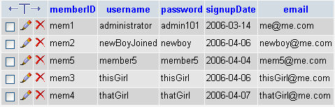

The Forum Members Table
This lesson is part of an ongoing Foruml tutorial. The first part is here: Build your own Forum, along with all the files you need. The previous lesson is here.
The members table, as its name suggests, holds information about people who have joined the forum. Click the members table in phpMyAdmin, then click Browse at the top. You should see the fields in the table:

There are five columns in the members table: memberID, username, password, signupDate, and email. (The passwords, by the way, should be encrypted. For tutorial purposes, however, we haven't done this. But you saw how to do this in an earlier section.)
The unique column (the primary key) is memberID. You'll see this column in the other tables, as well. When you're displaying information about a Post or a Reply, you'll want to include which member did the posting or replying. If you match the memberID in, say, the wpposts table with the memberID in the members table, you then have an easy and efficient way to display the member information. The alternative is to include a username column in the posts and replies table. But this would be a really bad way to construct a database, because you'd be duplicating information. With a single members table, and a reference field in other tables, you don't need to add username fields into every post and reply table. Just link to the members table.
But the members table we have here is really basic. You could add more fields. A common practice in Forums is to reward loyal members who Post and Reply often with a higher status than other members. Its these members who keep a Forum alive. Because they'll give up their spare time, it's a good idea to give them a little control over the Forum, say as a moderator. In the members table, then, you can add a Status field. This would allow you to change what a member is allowed to do.
Depending on what type of forum you want, you can add even more fields to the members section. What about adding an Avatar field? This could be a link to an small image that the member wanted to use in their Posts and Replies. But we're sure that you can think of more fields that can be added to our basic members table!
In the next part, we'll take a look at the 5 Post tables in the database.